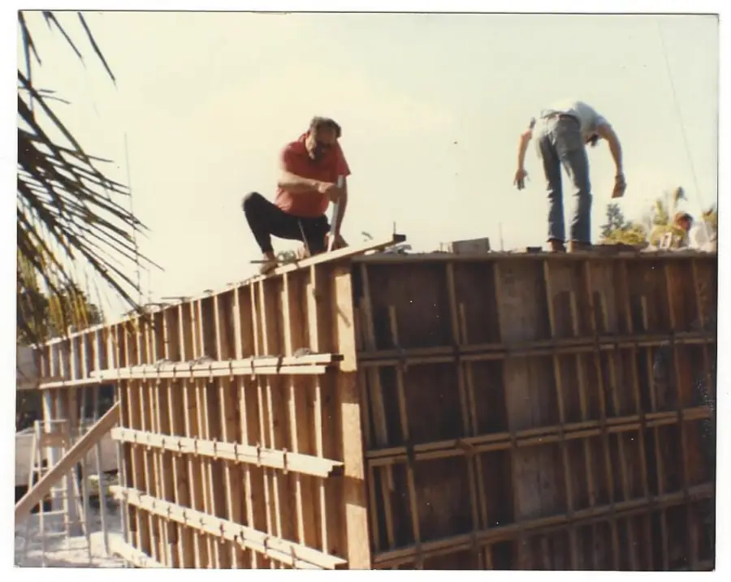

Our story · Est. 1968
More than half a century of building the Keys.
Coral Construction Company was started in 1968 by Arnold Steinmetz and his father. It has been family owned and operated ever since — 58 years and counting.

Who we are
A family business in the truest sense.
Coral Construction got its start early, and even as a young company it earned a reputation that has kept it thriving for more than five decades. That reputation was built the old-fashioned way: by doing the work right, and by being there to see that it was.
Since the beginning, our family has been on the job site from start to finish. Multiple generations have learned the trade on Keys projects, and that accumulated experience is why we can handle nearly any challenge a waterfront, a building or a public road can present. Even now, Arnie stops by the job sites to make sure the work meets his standard.
The ground beneath us
The Keys are built on coral. Literally.
The Florida Keys rest on Key Largo Limestone — the fossilized remains of a coral reef that thrived here roughly 125,000 years ago. When Henry Flagler’s crews pushed the Overseas Railroad across the islands in the early 1900s, they quarried that coral rock on Windley Key to help build it.
Every foundation we pour, every piling we drive and every seawall we set goes into that same ancient reef. Building in the Keys has always meant building on coral.
Timeline
The Keys’ story, and ours.
Teal marks Keys history; coral marks our family’s.
-
Keys history
c. 125,000 BP
A reef becomes an island chain
Ancient coral reefs grow, die back as sea levels fall and harden into Key Largo Limestone — the bedrock beneath the Keys.
-
Keys history
1905–1912
The Overseas Railroad
Henry Flagler’s Florida East Coast Railway is carried across open water to Key West, with the first train arriving in 1912. Crews based on Pigeon Key work around the clock on the Seven Mile Bridge — a “marathon” effort said to have given Marathon its name.
-
Keys history
1935–1938
From rails to road
The 1935 Labor Day Hurricane destroys much of the railroad. Its bridges are adapted for cars, and the Overseas Highway opens in 1938.
-
Our family
1949
Building runs in the family
Our family builds a home in Saginaw, Michigan. Great-great-grandma stands beside it in the oldest photo in our album.
-
Our family
1968
Coral Construction Company is founded
Arnold Steinmetz and his father start Coral Construction Company. From day one, the rule is simple: the family is on the job site, from beginning to completion.
-
Our family
1982
Foundations, beams & slabs
George and Arnie Steinmetz pour foundations and beams, build a cistern and set pre-stressed concrete slabs on a house captured in our 1982 photos. That same year, the new Seven Mile Bridge opens to traffic.
-
Our family
Today
Still family owned & operated
More than half a century later, Coral is still run by the family that started it — building marinas, docks, seawalls, homes and commercial projects across the Keys, and now serving public agencies with road, utility and waterfront repairs.


Since the beginning, our family has always been on the job site, from beginning to completion.
— The Steinmetz family
From the family album
Photos from our family’s early projects. Select any image to view it larger.


Start a project
Let’s write the next chapter.
Whether it’s your first dock or your agency’s next repair contract, we’d be glad to hear about it.